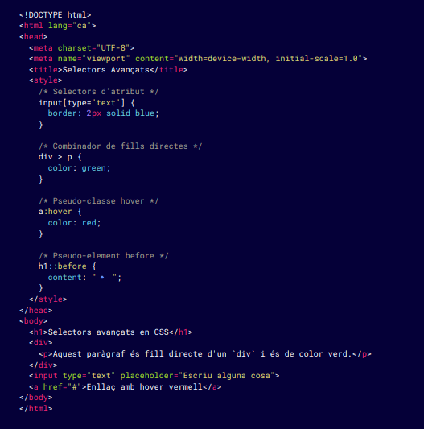

Los selectores avanzados en CSS permiten aplicar estilos con mucha más precisión y flexibilidad, permitiendo seleccionar elementos específicos en función de su posición, relación con otros elementos o atributos.
Seleccionar elementos con un atributo específico
input[type="text"] {
border: 1px solid blue;
}
Seleccionar elementos con un atributo que contiene un valor específico
a[href*="example"] {
color: green;
}
Seleccionar elementos con un valor de atributo que comienza con un valor específico
img[src^="https"] {
border: 2px solid black;
}
Seleccionar todos los elementos con un atributo
[personalitzat] {
border: 1px solid red;
}
Combinador de descendentes ( ), selecciona todos los elementos que son descententes (hijos, nietos, etc.) de un elemento padre
div p {
color: red;
}
Combinador de hijos directos (>), selecciona solo los hijos directos de un elemento padre
div > p {
color: blue;
}
Combinador de hermanos adyacentes(+), selecciona el elemento que está justo después de otro elemento hermano
h1 + p {
font-weight: bold;
}
Combinador de hermanos generales (~), selecciona todos los hermanos que siguen un elemento determinado dentro del mismo padre
h2 ~ p {
color: gray;
}
:hover: aplica estilos cuando el usuario pasa el ratón sobre el elemento
a:hover {
color: red;
}
:nth-child(): selecciona elementos en función de su posición entre sus hermanos
tr:nth-child(odd) {
background-color: #f0f0f0;
}
:first-of-type: selecciona el primer elemento de sus tipo dentro de su padre
p:first-of-type {
font-weight: bold;
}
:not(): selecciona todos los elementos excepto los que coincidan con el selector especificado
div:not(.important) {
background-color: yellow;
}
::before: añade contenido o estilos antes del contenido real de un elemento
h1::before {
content: "★ ";
color: gold;
}
::after: añade contenido o estilos después del contenido real de un elemento
p::after {
content: " (Final)";
color: gray;
}

En este ejemplo: